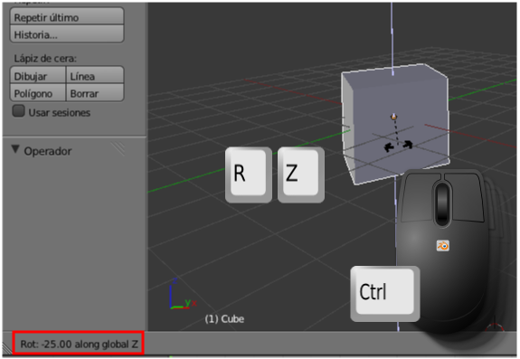
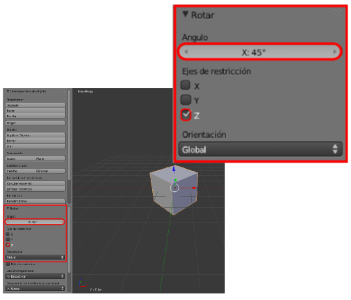
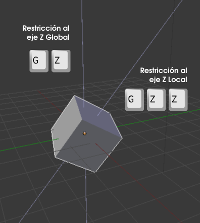

Rotar y escalar
En realidad, si se ha comprendido la filosofía de la transformación Mover, tanto Rotar como Escalar no deberían entrañar más dificultad que saber que los atajos son "R" y "S" respectivamente.
Algunas particularidades a tener en cuenta respecto a la transformación Rotar son:
- Si pulsamos "Control" durante la edición los saltos en el giro son de 5º. Este hecho se comprueba en tiempo real en la parte inferior izquierda del editor Vista 3D. En el siguiente ejemplo se ha restringido el giro al eje Z Global y como al mover el ratón se está pulsando la tecla "Control" vemos cómo se consigue fácilmente un ángulo de -25º.

- Si buscamos precisión es muy habitual introducir el valor del giro a través de teclado con una secuencia de este tipo "RZ45" que se traduce por un giro en el eje Z con valor 45º. Cuando escribimos 45 lo vemos en tiempo real en el lugar antes señalado.
Viejo método vs método 2.60
Lo que hemos explicado es el método con el que se han hecho estas ediciones hasta Blender 2.49b y así lo siguen haciendo la gran mayoría de los usuarios. Sin embargo en el paso a 2.5x se incorporó una manera visual de hacer todo eso y que consiste en pulsar "R" y después "Intro". De esta manera no se hace edición ninguna pero en el cuadro Herramientas ("T") se despliega una botonera para elegir todos los parámetros. Por supuesto esto es válido tanto para Mover, como para Rotar como para Escalar.
Así, el ejemplo "RZ45" se consigue del siguiente modo. Tras "R""Intro":
Ejes globales y ejes locales
Un objeto sale a escena con su eje Z (Local) apuntando hacia arriba respecto al entorno 3D (Global) lo que se traduce que comparten orientación en ese eje. Y así ocurre con los tres ejes y en todas las ocasiones.
Sin embargo, más pronto que tarde, ese objeto se rotará y es muy probable que su eje Z deje de coincidir con el del entorno. Pero ¿qué pasa si queremos desplazar el objeto sobre su eje Z Local? Si hacemos "GZ" no se cumplirán las expectativas. En ese caso la secuencia es "GZZ"; es decir, ponemos en marcha la edición de desplazamiento con "G", después pulsamos "Z" dando la orden de que se restringa al eje Global correspondiente y para terminar le decimos a Blender que cambie de Global a Local pulsando por segunda vez la tecla "Z".
